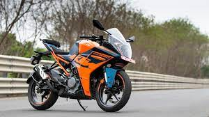
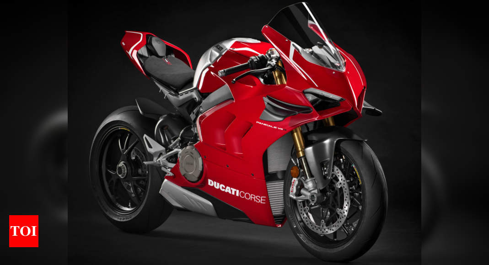
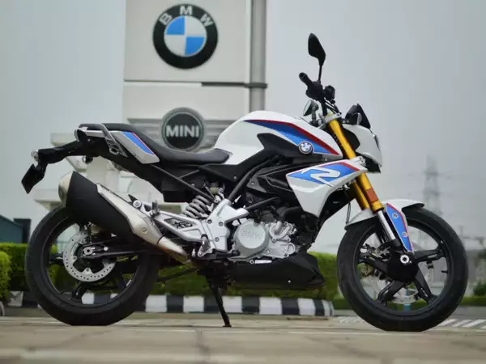
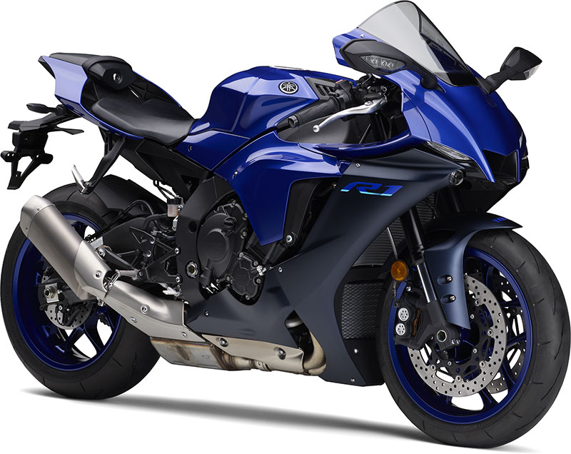
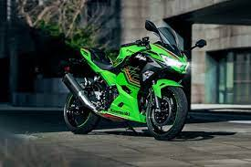

lUXURIOUS BIKES
1.Ktm 390
2.Ducati
3.BMW
4.Yamaha
5.Kawasaki Ninja
KTM 390

The RC 390 is a powered by 373cc BS6 engine mated to a 6 is speed gearbox . This engine of RC 390 develops a power of 43.5 ps and a torque of 37 nm. The KTM RC 390 gets disc brakes in the front and rear.
DUCATI

It is an Italian motorcycle-manufacturing company that is part of the Ducati group, and is headquartered in Bologna, Italy.
BMW

The BMW name stands for Bayerische Motoren Werke GmbH. BMW was created in 1917 from the Munich firm Rapp-Motorenwerke.
YAMAHA

Yamaha Motor Co Ltd (Yamaha Motor) is an automobile company. The company manufactures and markets motorcycles, Financial services; and other components.
KAWASAKI NINJA

The Kawasaki Ninja is a name given to several series of Kawasaki sport bikes that started with the 1984 GPZ900R.